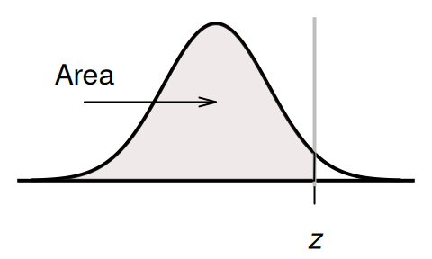

B.2 When the area is known, and the \(z\)-score is sought

The table gives the \(z\)-score such that a given probability (area) is to the left of the \(z\)-score. For example: Look up an area of \(0.01\) (i.e., \(10\)%), and the corresponding \(z\)-score is \(z = -1.282\); that is, the area to the left of \(z=1.282\) is about \(10\)%.
To use this table,
enter that area to the left in the search box under the Area.to.left column.
The corresponding \(z\)-score will be shown.
(Alternatively, you can search through the table manually.)
When the \(z\) score was known,
the tables in Appendix B.1 were used.
However,
when working backwards,
the tables in
Appendix B.2 are used:
enter the area to the left in search box under Area.to.left,
and the corresponding \(z\)-scores appears under the z.score column
(see the animation below).
The hardcopy tables work differently. When the \(z\) scores (which appear in the margins of the tables; see the textbook) is known, the areas appear in the body of the table. However if the area (or probability), which is in the body of the table, is known, the corresponding \(z\)-score is found in the margins of the table, and hence the observation \(x\); see the animation below.